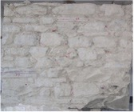
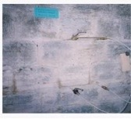
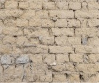

CT 115 / SC8 · EUROCÓDIGO 8
Base de dados de
alvenaria portuguesa.
Explore os resultados experimentais que ajudam a caracterizar as estruturas de alvenaria portuguesas.
Explorar os ensaios ↓ZENODO · V2 · 17.04.2026 · CC BY 4.0

TA1
TA6
TA10Tipologias de alvenaria portuguesa
TIPOLOGIAS DE REFERÊNCIA
Alvenaria portuguesa, TA1–TA11.
Selecione uma imagem para explorar os registos dessa tipologia.
EXPLORAR A BASE DE DADOS
Da evidência ao detalhe.
460 registos apresentados a partir dos 469 registos da fonte. Foram excluídas 6 entradas sem código de tipologia TA, 2 cópias integralmente repetidas e 1 entrada com módulo elástico negativo, pendente de confirmação. Os valores científicos não foram alterados.
| fc (MPa) | Eest. (MPa) |
|---|
Pontos agregados por coordenadas. As localizações seguem a fonte e podem ser aproximadas.
CIÊNCIA ABERTA / OPEN SCIENCE
Uma base comum para
conhecer melhor.
Dados experimentais de estruturas de alvenaria portuguesas, recolhidos em campanhas de ensaios in situ e laboratoriais. A base foi desenvolvida no âmbito da CT 115/SC8, reunindo contributos de universidades, laboratórios e empresas de engenharia.
Curadoria: António Simões. Coordenação: Rita Bento e Tiago Miguel Ferreira. Consulte o registo Zenodo para a lista completa de contributos e a citação.
Dados, autoria e citação no Zenodo ↗Para submeter novos ensaios, utilize o formulário do site original. Este explorador apresenta uma seleção auditada da versão v2 e não recebe nem aprova submissões.
Submeter no site original ↗